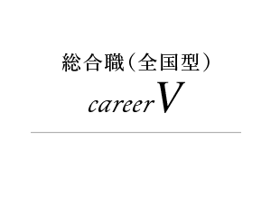

【幅広いフィールドで活躍したい】
career Vを選んだ理由は、さまざまなフィールドを経験していくなかで、私自身の適性に応じたキャリア形成ができることに魅力を感じたためです。そのなかでも特に、個人営業フィールドを中心にキャリアアップを図りたいと考えており、早いうちから営業所長を経験していきたいと考えています。将来は、営業所長の経験を活かし、営業企画部など個人営業フィールドを支える部署でキャリアアップを図っていきたいと思います。

山本 能凡 政治経済学部首都圏採用

【温かい社風】
金融業界において、生命保険業界は長期間にわたりお客さまに寄り添い、支えになることができる業界です。その過程でお客さまの大切な「ライフプラン」に関われると同時に責任が伴います。その仕事のスケールの大きさに魅力を感じました。明治安田生命では、インターンシップやセミナー等を通じて職員と接する機会が多く、温かい社風があると知ったことが決め手になりました。

【時間を意識する】
選考では時間を意識していました。採用選考では限られた時間の中で自分を表現することが求められます。特にグループディスカッションでは、活発な議論ができたとしても、決められた時間内に終わらなければ良い議論とは言えません。明確な正解がないグループディスカッションだからこそ、一つの結論を時間内に出せるよう周りのメンバーに働きかけていました。また、採用面接においては、面接官からの質問に対し、端的に答えることを意識していました。